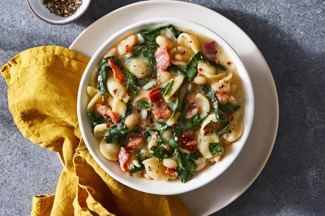

Sohla Dish

Comfort on a cold winter evening.
We love a warm bowl of beany stew and pasta on a cold night.
And on a warm night. And any other night really, this is
an easy and delicious go-to when you don't know what to
have for dinner. So most of the time.
In addition to being delicious, it's also a great way to
trick yourself into eating a lot of greens since the greens
are covered in bacon fat, butter, and parmesan. We are
unsure if this negates the health benefits of the greens,
but it's probably ok.
This recipe was created by talented chef
Sohla El-Waylly.
~Let's Get Cooking~
You will need:
- 5 ounces (1 1/2 cups) orechiette
- 4 cups chicken or veggie stock
- 4 slices thick cut bacon, cut into bite
size pieces
- 3 garlic cloves
- 1 pound collard greens (2 small
bunches)
- 1 (15.5-oz.) can cannellini beanies,
drained and rinsed
- 1/4 to 1/2 teaspoon red pepper flakes,
add more if you like lava like me
- salt and pepper to taste
- 1 ounce Parmesan or pecorino, or just
measure with your heart, finely grated
- 1 tablespoon butter (if using salted,
adjust added salt accordingly)
How to bring it all together:
- Place pasta in a small bowl and cover with 1 1/2 cups
chicken stock or water, stirring occasionally.
- Add bacon to a dutch oven or large pot along with a
small amount of water. Cook over medium heat, stirring
occasionally, till fat has melted out of the bacon and
it is crispy and browned.
- Peel and finely chop or grate garlic. Remove stems from
collard greens. Cut collards into bite sized pieces.
- Remove bacon from the dutch oven with a slotted spoon.
Add garlic and cook for about 1 minute, then add red
pepper flake and cook for an additional 30 seconds.
- Add the collards, the remaining chicken stock or water,
and a generous pinch of salt and black pepper. Turn heat
up to high to bring to a boil, then reduce heat to
maintain a low simmer. Add the beans. Cook till liquid
is reduced and collards are tender, about 45 minutes.
Taste, and add salt and pepper if necessary. (We want
slightly over-seasoned so that seasoning is correct
after pasta is added.)
- Add pasta along with the soaking broth or water. Simmer,
stirring constantly, till pasta is al dente or as firm
as you prefer. Remove from heat and add cheese, butter,
and bacon. Stir well. Taste and add salt, black pepper,
or red pepper flakes if needed.
- Serve with added cheese on top and enjoy!